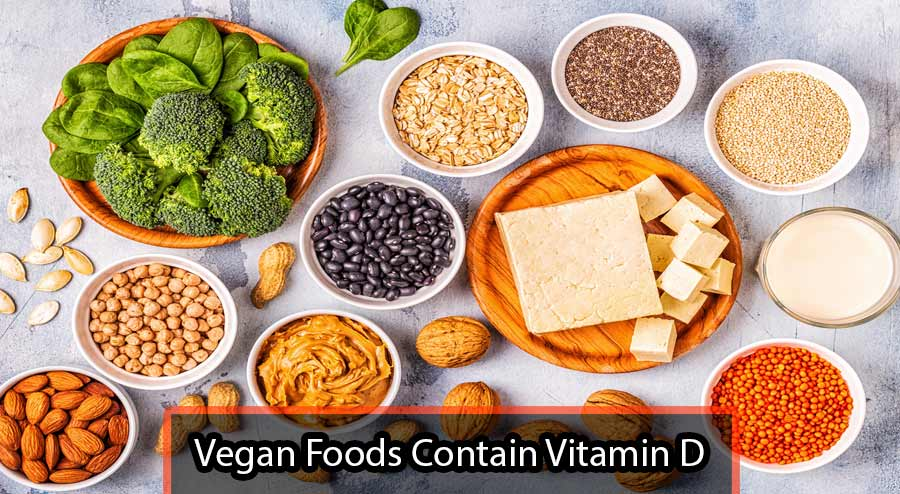

The human body produces vitamin D as a response to sun exposure. Despite its name, vitamin D is not a vitamin but a hormone or prohormone. It is both a nutrient we eat and a hormone our bodies make.
Vitamin D plays an important role in immune function. Vitamin D can reduce cancer cell growth, help control infections and reduce inflammation. Many of the body's organs and tissues have receptors for vitamin D, which suggests and important role beyond bone health which scientists are actively investigating.
Did You Know? Catching the sun's rays in a sunny office or driving in a car unfortunately won't help to obtain vitamin D as window glass completely blocks UVB light.
Few foods naturally contain vitamin D, the flesh of fatty fish (such as trout, salmon, tuna, and mackerel) and fish liver oils are among the best sources, though some foods are fortified with vitamin D. For most people, the best way to get enough vitamin D is taking a supplement because it is hard to eat enough through food.
Vitamin D3 which is the type that is formed on animals and humans, can be formed when a chemical reaction occurs in human skin, when a steroid is broken down by the sun's ultraviolet-B (UVB) light or so-called “tanning” rays. The amount of the vitamin absorbed can vary widely. For example, use of sunscreen can reduce vitamin D absorption by more than 90%. Wearing full clothing that covers the skin, spending limited time outdoors, darker skin tones due to having higher amounts of the pigment melanin, which acts as a type of natural sunscreen, older age when there is a decrease in the steroid necessary and people start spending more time indoors, are all factors that reduce the absorption of UVB light from the sun.
Winter seasons and living in northern latitudes above the equator where UVB light is weaker also impacts UVB exposure where people can't make enough Vitamin D for up to 6 months of the year. The body can store vitamin D from summer sun exposure, but it must last for many months. By late winter, many of us will be deficient.
Vitamin D supplements are available in two forms: vitamin D2 (“ergocalciferol” or pre-vitamin D) and vitamin D3 (“cholecalciferol”). Both are naturally occurring forms that are produced in the presence of the sun's UVB rays, hence its nickname “the sunshine vitamin”. The difference between D2 and D3 is, that D2 is produced in plants and fungi, and D3 in animals including humans. Here are a few recommended products. Click on any product image for details and prices: